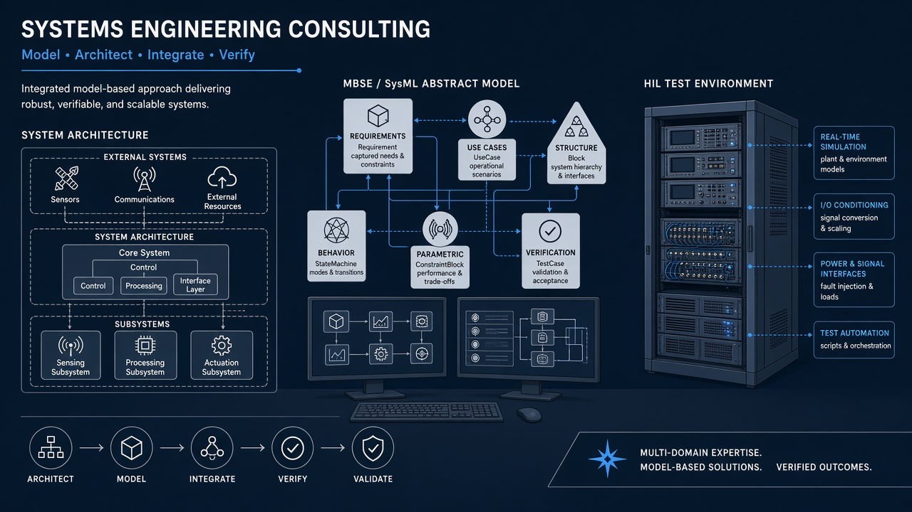

Model-Based Systems Engineering (MBSE)
Requirements, architecture, and hazard-aware modeling practices; division-level SE/MBSE training roadmaps; INCOSE-aligned community engagement from prior roles.
MBSE, architecture, HIL/SIL, V&V, and safety-critical systems engineering — delivered as forward deployed engineering services.
Systems engineering consulting from Digital MBSE Solutions LLC is not a standalone slide-only practice. It is grounded in the same forward deployed engineering model used for DOE facilities and high-hazard cells: architecture and MBSE that connect to real integration, verification that operators can inspect, and safety-critical habits from medical device and nuclear backgrounds.
Engagements may stand alone (architecture / V&V / MBSE coaching) or blend with RaaS and additive support when physical cell work is in scope.

Grounded in Daniel S. Menoher’s career across surgical robotics and nuclear — dual titles kept dual where roles were concurrent.
Requirements, architecture, and hazard-aware modeling practices; division-level SE/MBSE training roadmaps; INCOSE-aligned community engagement from prior roles.
Software and system architecture using Carnegie Mellon SEI principles — replatforming, green-field platforms, and multi-team delivery structure.
Automated HIL/SIL farms, MoCap spaces, and regression suites (C++/Python) patterned on surgical robotics verification leadership.
Test strategy, configuration control, and evidence-before-promotion habits suited to teleop/autonomy and regulated software contexts.
Background from Asensus Surgical (Director Offshore Engineering; Principal Systems Engineer | Robotics — concurrent) and Smith + Nephew (Sr Manager Software Verification; Technical Project Manager | Robotics — concurrent).
Background from Westinghouse Nuclear Fuels and FPoliSolutions work on safety-critical simulation and plant physics / PRA contexts — prior professional experience, not invented current partnerships.
Same honesty rules as the rest of the site: no fake customers, no LOIs, no oversell.
Clarify what must be verified, what can remain teleop, and where architecture debt blocks progress.
Forward deployed presence when the cell or lab needs it; structured consulting when remote architecture / V&V coaching is enough.
Models, test gates, and delivery visibility that outlast the engagement — not one-off slideware.
Prior roles include work aligned with IEC 62304, IEC 13485, NQA-1, 10 CFR 50, and FDA/MDR contexts. That reflects professional background — not certified product status for Digital MBSE offerings.
MBSE, architecture, HIL/SIL, or V&V — as forward deployed engineering services.
Contact us